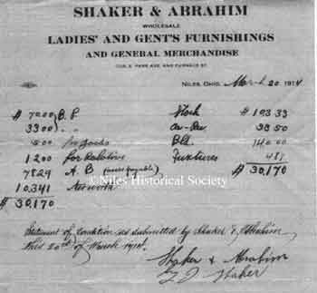
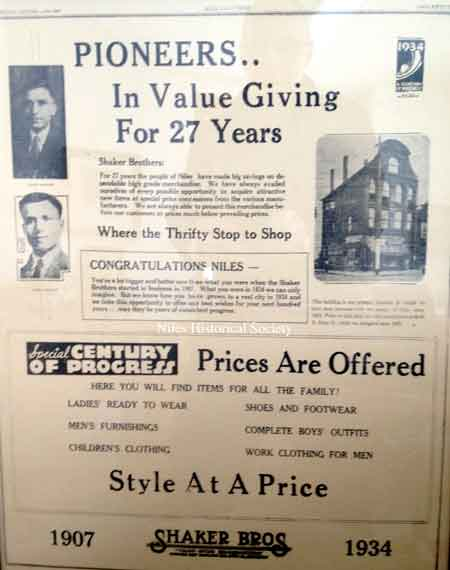
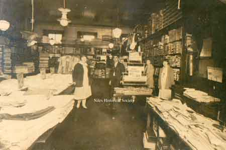
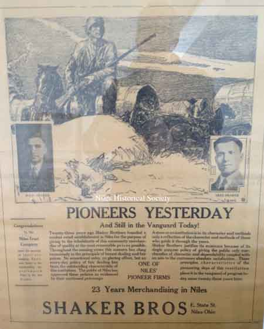
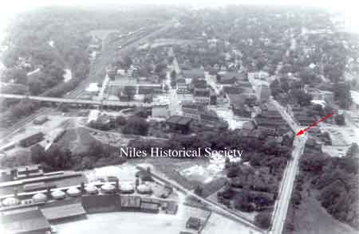
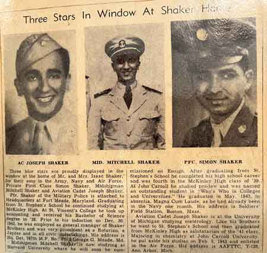
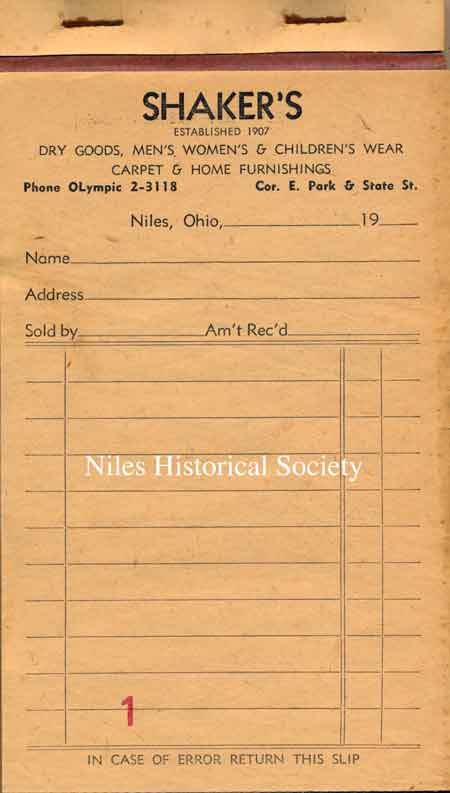
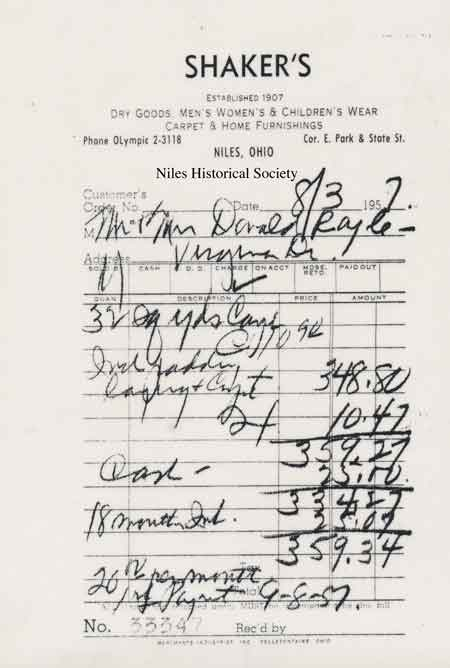
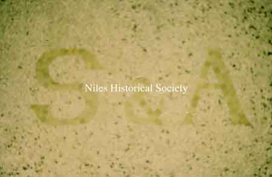

History of the Shaker Family Store

Mango Block Building, 1895
{kind=link}

The building and its contents values
{kind=link}

newspaper clipping
{kind=link}

Interior photograph, 1935 ca, of the Shaker store with Isaac in the center.
{kind=link}

newspaper clipping

Niles Daily Times, 9-17-1930, article of the new Abrahams' Store opening.

1906 postcard of Furnace Street, now State Street, with the old Central School in the distant background.
{kind=link}

Aerial map showing Park Avenue, the Mango Building, and Niles Firebrick Company. P02.474

Mango Building

aerial view of Park Avenue shows the corner of Park Avenue and State Street with the Mango Building in back right with the Commercial Hotel to the left.

Shaker Guarantee

View shows the beginning stage of the demolition of the buildings on State Street as urban renewal began in 1975-6.

Isaac Shaker's brother Joseph holding toddler Mitchell Shaker, Isaac Shaker's father Shaker Aoud, Isaac Shaker with young son Simon Shaker in front, Isaac Shaker's brother Samuel with unknown toddler in front. Back row left Fred Joseph and Isaac's brother and partner in the store Akel Shaker.

Isaac Shaker's sister Josephine Shaker (Stets), my grandmother Sophia Shaker, Grandfather Isaac Shaker and back row left to right, Joseph, Simon and Mitchell Shaker.

Wedding certificate of Isaac and Josephine Shaker, married on June 25, 1914.
{kind=link}
Josephine Shaker was born in Misrah Batroun, Lebanon, on Jan 6, 1897 and died on Oct 13, 1978. Isaac Shaker was born in Toula Batroun, Lebanon on Feb 10, 1887 and died on Oct 3, 1960.

Three sons of my grandfather Isaac Shaker: Joseph, Mitchell and Simon.youngest to oldest.
{kind=link}

Three blue stars are proudly displayed in the window at the home of Mr. and Mrs. Isaac Shaker for their sons in the Army, Air Force and Navy, Private First Class Simon Shaker, Midshipman Mitchell Shaker and Aviation Cadet Joseph Shaker.

Back view of the Mango Block
{kind=link}

Samples of receipts from Shaker's Store
{kind=link}

Samples of receipts from Shaker's Store

View of Shaker Store

View of Shaker Store
{kind=link}
